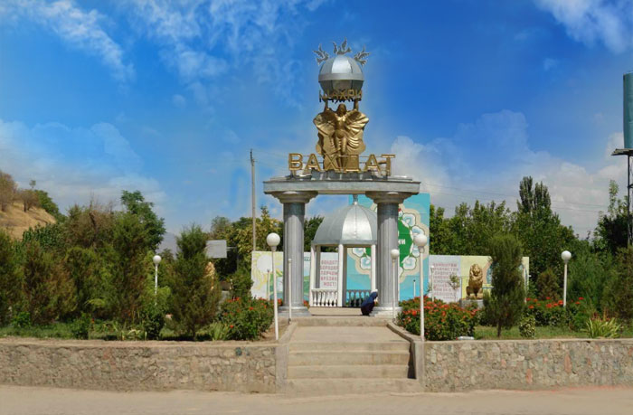
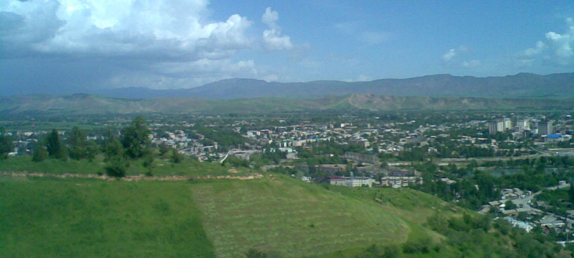
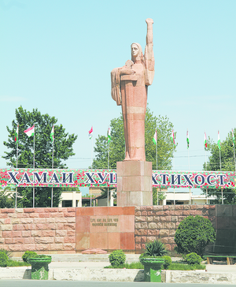
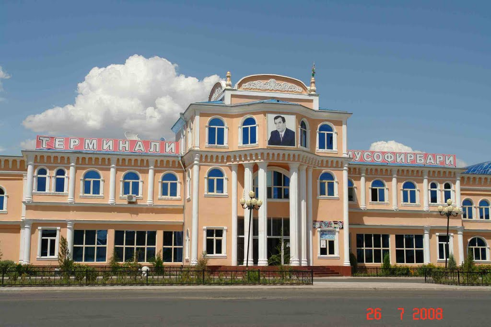
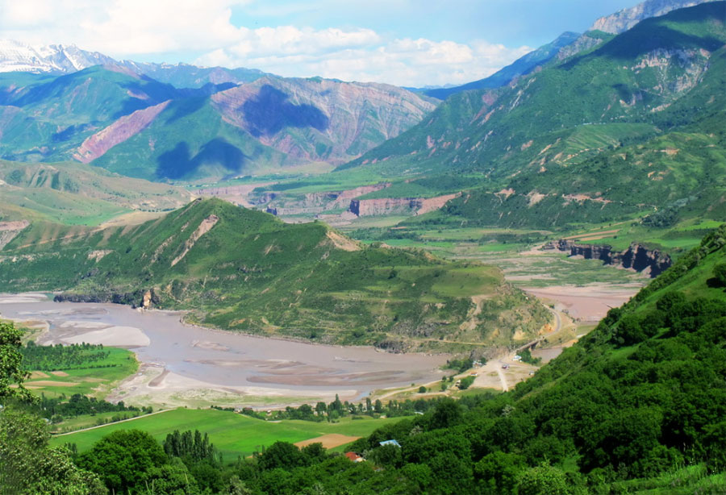
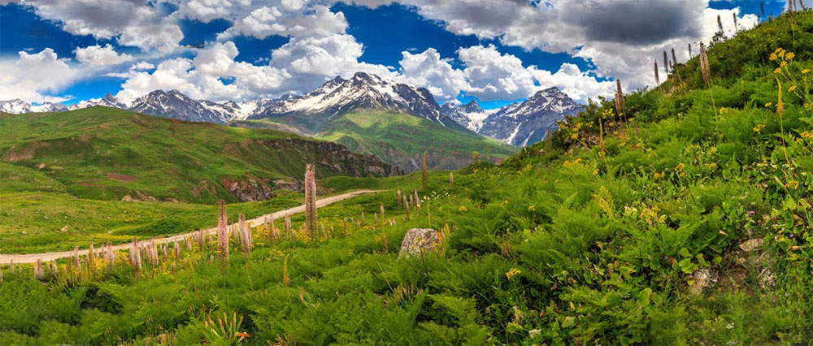
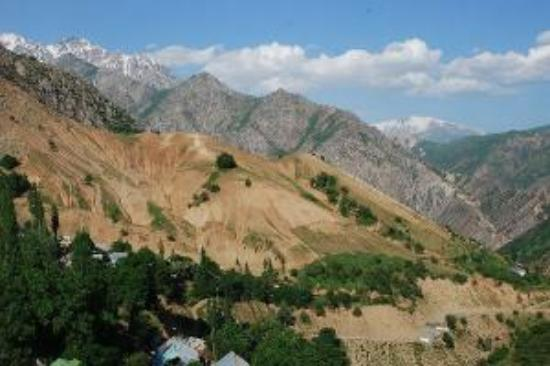
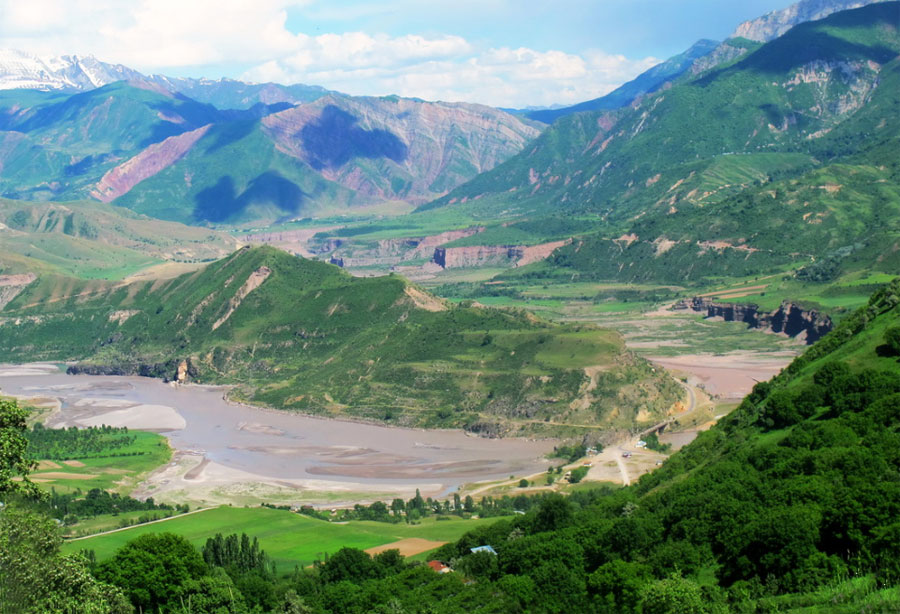
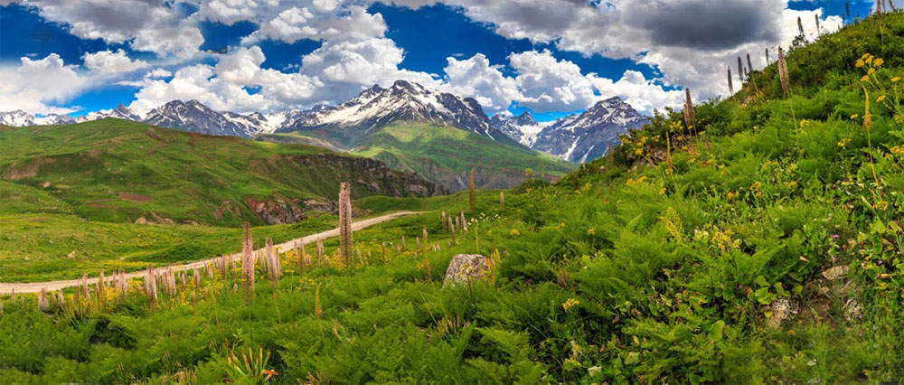
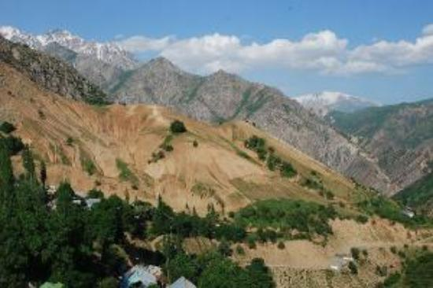

Территория Вахдатского района раскинулась на западе Таджикистана. Район граничит на севере с Согдийской областью, на юге – с Хатлонской областью, на западе – с Душанбе. Северные его участки заняты горными гребнями и пиками Гиссарского хребта, южная – долиной реки Кафирниган. В долинах рек господствует субтропический климат и доминируют кустарниковые и луговые ландшафты, в горах преобладают субальпийские и альпийские луга. Несмотря на довольно сложный рельеф и труднодоступность, этот район заселён очень давно. Он входит в историческую область Бактрия, которая в разные времена была частью могущественных держав: персидских империй древности и мусульманских ханств. До вхождения в состав России край принадлежал Кокандскому ханству. Как территориальная единица район возник в 1927 году под названием Янги-Базарский район. Так как районный центр несколько раз переименовывали, менялось и название района: Орджоникиджеабадский, Кафарнихонский, Вахдатский. На территории района есть несколько интересных мест. Прежде всего, это Рамитское ущелье – курортно-туристическая зона, известная горячими источниками и заповедными лесами. Любопытен древний кишлак Симиганч, где испокон веков выращивают виноград.
    




